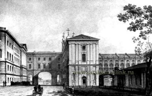
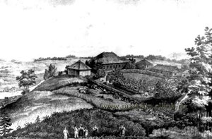
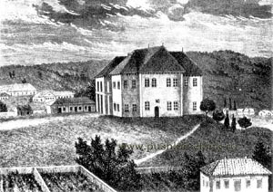
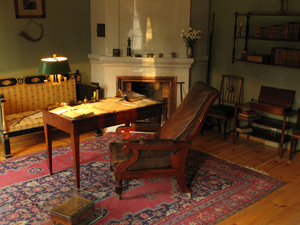
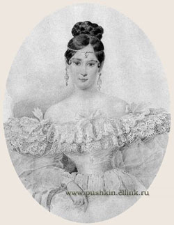
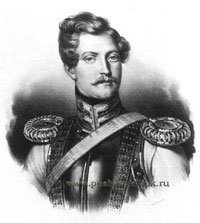
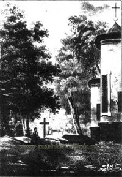

Aлександр Сергеевич Пушкин родился 6 июня 1799 года (по старому стилю 26 мая) в Москве в дворянской помещичьей семье (отец его был майор в отставке) в день праздника Вознесения. В тот же день у императора Павла родилась внучка, в честь которой во всех церквах шли молебны и гудели колокола. Так, по случайному совпадению день рождения русского гения был ознаменован всеобщим народным ликованием. Символично и место рождения поэта г. Москва - самое сердце русской жизни, России. Будущего поэта крестили 8 июня в церкви Богоявления в Елохове.
Отец Пушкина Сергей Львович и мать Надежда Осиповна, урожденная Ганнибал, были дальними родственниками. Пылкие страсти, руководившие предками как по отцовской, так и по материнской линии, оказали свое влияние и на Пушкина. Семья (кроме Александра были еще дети Ольга и Лев) принадлежала к самой образованной части московского общества.
В их доме, точнее, в квартире, которую снимали родители Пушкина, собирались поэты, художники, музыканты. Общая галломания, господствовавшая в обществе, французское воспитание в семье с французами гувернерами (к счастью, их удачно уравновешивали бабушка поэта Мария Алексеевна и знаменитая няня Арина Родионовна), доступ к прекрасным библиотекам отца, а также дяди поэта В. Л. Пушкина и дальних родственников Бутурлиных - формировали ум и детскую душу Пушкина. Свои первые в жизни стихи поэт написал по-французски. Его прозвище в Лицее было «француз».

В 12 лет, получив начатки домашнего воспитания, Александр был отвезен учиться в новое, только что открывшееся 19 октября 1811 г. учебное заведение - Царскосельский Лицей под Петербургом, место, где располагалась летняя резиденция русских царей.
Программа занятий в Лицее была обширной, но не столь глубоко продуманной. Воспитанники, однако, предназначались к высокой государственной карьере и имели права окончивших высшее учебное заведение.
Немногочисленность учащихся (29 чел.), молодость ряда профессоров, гуманный характер их педагогических идей, ориентированный, по крайней мере, у лучшей части их, - на внимание и уважение к личности учеников, отсутствие телесных наказаний, дух чести и товарищества - все это создавало особую атмосферу. Пушкин сохранил лицейскую дружбу и культ Лицея на всю жизнь. Лицеисты выпускали рукописные журналы и уделяли много внимания собственному литературному творчеству. «Начал я писать с 13-летнего возраста и печатать почти с того же времени», - вспоминал Пушкин впоследствии.
Из этого выпуска трое друзей поэта стали участниками восстания против царя 14 декабря 1825 г.
В 1815 г. Пушкин с триумфом прочел на экзамене свое стихотворение «Воспоминание в Царском Селе» в присутствии знаменитого поэта Г. Р. Державина: «Старик Державин нас заметил и, в гроб сходя, благословил». На выпускном акте в 1817 г. Пушкин также прочел собственное стихотворение «Безверие».
Вскоре Пушкин переехал в Петербург и поступил в коллегию иностранных дел в чине коллежского секретаря. Общение его очень широкое: гусары, поэты, литературные общества «Арзамас» и «Зеленая лампа», театры, модные рестораны, дуэли – «слава Богу, не смертоносные», как сообщала Е. А. Карамзина своему брату Вяземскому. Но Пушкин не растворялся в этой пестроте, он искал себя.
Сразу после окончания Лицея в 1817 г., а затем в 1819 г. после тяжелой болезни Пушкин приезжал в имение матери с. Михайловское Псковской губернии. В первые годы по окончании Лицея им были написаны стихотворения «Деревня», «Домовому», «Чаадаеву», ода «Вольность», поэма «Руслан и Людмила».

Идеи гражданской свободы, политического радикализма, которыми было проникнуто русское общество после победы над Наполеоном, нашли отражение и в стихах, и в поведении юного Пушкина. «Пушкина надобно сослать в Сибирь: он наводнил Россию возмутительными стихами; вся молодежь наизусть их читает» - таково было решение царя Александра I. Хлопотами друзей вместо Сибири Пушкина сослали на юг. Официально это был перевод по службе в г. Екатеринославль под начало генерала И. Н. Инзова, наместника Бессарабии.
«Приехав в Екатеринославль, я соскучился, поехал кататься по Днепру, выкупался и схватил горячку, по моему обыкновению. Генерал Раевский, который ехал на Кавказ с сыном и двумя дочерьми, нашел меня в бреду, без лекаря, за кружкой оледенелого лимонада. Сын его ... предложил мне путешествие по Кавказским Водам ... я лег в коляску больной; через неделю вылечился» (из письма поэта брату).
Почти все лето 1820 г. Пушкин прожил на Кавказе, где начал поэму «Кавказский пленник». Далее с семьей Раевских через Тамань, Керчь, Феодосию Пушкин прибыл морем в Гурзуф и провел там три недели: «В Юрзуфе жил я сиднем, купался в море и объедался виноградом; я тотчас привык к полуденной природе и наслаждался ею со всем равнодушием и беспечностью неаполитанского Lazzarono» (из письма Дельвигу).

Вскоре через Георгиевский монастырь и Бахчисарай Пушкин отправился в Симферополь и далее в Кишинев, ибо туда переехала канцелярия Инзова. Не досаждаемый почти никакими служебными поручениями, в течение трех лет Пушкин жил на квартире у Инзова, пользуясь его неизменным расположением и теплой заботой. Поэт выезжал оттуда в Киев, с. Каменку, в Одессу, Аккерман, Бендеры, Измаил и др. места. Впечатления этих лет нашли отражение в южных поэмах Пушкина: «Кавказский пленник», «Братья – разбойники», «Бахчисарайский фонтан», «Цыганы». В Кишиневе же была написана поэма «Гаврилиада», а также начат роман в стихах «Евгений Онегин».
В с. Каменка Пушкин сблизился с членами тайного общества, будущими «декабристами». В Кишиневе был принят в масонскую ложу «Овидий».
Шумная жизнь Одессы «в разнообразии живом», с ее пестрым обществом, итальянской оперой, парижскими ресторациями привлекала Пушкина. Он переехал туда в июле 1823 г., будучи зачислен на службу к наместнику Новороссийского края графу М. С. Воронцову. Отношения их по многим причинам не сложились, и через год гр. Воронцов нашел и повод, и причину для удаления Пушкина в имение его матери с. Михайловское Псковской губернии. Поэт получил предписание одесского градоначальника неукоснительно следовать означенным маршрутом в г.Псков, получив для найма почтовых лошадей 389 р. 4 коп.
«Наш Псков хуже Сибири, и здесь пылкой голове не усидеть», - сокрушались о нем друзья в с. Тригорском. Положение под двойным надзором гражданских и духовных властей, на поруках родителей раздражало чувствительную натуру Пушкина. Он строил планы побега и в отчаянии даже просил поменять место ссылки на любую из крепостей государевых. Однако, успокаиваемый письмами друзей, смирился и вскоре заметил: «Я нахожусь в наилучшем положении, чтобы окончить мой поэтический роман ...» («Евгений Онегин»).
Сердечное участие в судьбе Пушкина принимали его друзья и соседи в с.Тригорском. Общение с ними, а также наблюдения за жизнью других окрестных помещиков давали поэту «краски и материалы для вымыслов, столь натуральных, верных и согласных с прозою и с поэзиею сельской жизни России» (А. И. Тургенев). Роман «Евгений Онегин», половина которого создавалась в Михайловском, по праву считается энциклопедией русской жизни.
Впечатления русской природы, обаяние древней псковской земли с ее «благородными курганами» и городищами, общение с крестьянами, с нянею Ариной Родионовной – «все волновало нежный ум» Пушкина, способствовало постижению души русского народа, национальных основ жизни:
Здесь меня таинственным щитом
Святое провиденье осенило
Поэзия, как Ангел-утешитель,
Спасла меня, и я воскрес душой.
По признанию самого поэта, в Михайловском изменился его творческий метод. От романтизма первых лет молодости он перешел к «романтизму истинному» (реализм). Талант его окреп: «Je sens que mon ame s'est tout-а -fait developpee, je puis creer».

В Михайловском создано около 100 произведений поэта: деревенские главы романа «Евгений Онегин», трагедия «Борис Годунов», поэма «Граф Нулин», окончание поэмы «Цыганы», такие стихотворения, как «Деревня», «Подражания Корану», «Пророк», «Вакхическая песня», «Я помню чудное мгновенье...», «Вновь я посетил ...», начало первого произведения в прозе - романа «Арап Петра Великого» (в приезд 1827 г.).
Здесь, на отчей земле, Пушкин получил импульс всему творчеству в дальнейшем. Друзья считали Михайловское поэтической родиной Пушкина.
Смерть царя Александра I, восстание в Петербурге 14 декабря 1825 г., в котором принимали участие многие друзья и знакомцы Пушкина, переменили его судьбу. Новый царь Николай I вызвал срочно поэта в Москву, разрешил жить, где он захочет, и объявил себя личным цензором Пушкина. Последнее обстоятельство порой затрудняло печатание некоторых сочинений Пушкина, чем он был постоянно озабочен, не имея иных источников дохода. Пушкину не разрешают ехать на Кавказ (в действующую армию), отказывают в поездке за границу.
До 1831 г. Пушкин живет попеременно то в Москве, то в Петербурге. Дважды после ссылки он побывал в Михайловском. Навещал тверских друзей - родственников хозяйки с. Тригорского П. А. Осиповой - в с. Бернове, с. Павловском, с. Малинники и в Старице Тверской губернии.
В мае 1829 г. он посватался в Москве к юной красавице Наталии Николаевне Гончаровой.

Получив неопределенный ответ, он без разрешения властей сразу самовольно уехал на Кавказ. Это путешествие по Военно-Грузинской дороге, яркие впечатления и многочисленные встречи с друзьями, участие в военных действиях русской армии, взявшей Арзрум, Пушкин описал в автобиографическом произведении «Путешествие в Арзрум» (1829).
По возвращении поэту пришлось давать письменное объяснение на запрос шефа жандармов А. Х. Бенкендорфа. Ранее подобные объяснения царю потребовались от Пушкина по поводу «Гаврилиады» и стихотворения «Андре Шенье». Над поэтом учрежден тайный надзор, который был официально отменен лишь спустя несколько лет после его кончины.
Сложной и противоречивой была жизнь поэта второй половины 1820-х годов: журнальные отношения и борьба с цензурой, доносы и опасные политические расследования, выговоры Бенкендорфа, а также неясные обстоятельства личной жизни. Но при всем этом главным в жизни неизменно оставалась поэзия, творчество. В эти годы написана поэма «Полтава», много стихотворений, статьи в журналы, «Роман в письмах», зрели драматические замыслы.
6 мая 1830 г. состоялась, наконец, помолвка Пушкина с Н. Н. Гончаровой. Отец выделил ему деревеньку Кистеневку с 200 душами крестьян, расположенную в Нижегородской губернии, вблизи от собственного его имения с. Болдино. Поэт отправился туда, чтобы оформить дела по введению во владение имением, рассчитывая быстро управиться, затем заложить имение и вернуться в Москву, чтобы справить свадьбу. Однако начавшаяся в Москве эпидемия холеры и установленные повсюду карантины задержали Пушкина в Болдине с 7 сентября по 2 декабря 1830 г. Он тревожился за жизнь невесты, так как оставаться в холерной Москве ей было опасно, он устал и подавлен. Первые его стихотворения в Болдине – «Бесы» и «Элегия» («Безумных лет угасшее веселье ...»).
Вскоре нежное письмо невесты успокоило его. Соединение тишины и досуга, и одновременно напряжение, рождаемое чувством приближения грозных событий (революционные потрясения в Европе, холера в России), выплеснулось неслыханным даже для Пушкина творческим подъемом. «Болдинская осень» 1830 г. стоит особняком в творчестве поэта, когда им созданы были «Повести Белкина», «маленькие трагедии»: «Скупой рыцарь», «Моцарт и Сальери», «Каменный гость», «Пир во время чумы», - поэма «Домик в Коломне», закончен весь роман «Евгений Онегин» (кроме письма Онегина), повесть «История села Горюхина», «Сказка о попе и работнике его Балде», критические статьи, множество стихотворений. В Болдинскую осень талант Пушкина достиг полного расцвета.
5 декабря 1830 г. поэт вернулся в Москву, и 18 февраля 1831 г. в церкви Вознесения у Никитских ворот состоялось его венчание с Н. Н. Гончаровой. Первые месяцы семейной жизни он провел с женой в Москве, сняв квартиру на Арбате в доме Хитрово (ныне дом 53).
В мае 1831 г. молодые Пушкины переехали в Царское Село - место счастливых лицейских воспоминаний поэта. Здесь написана «Сказка о царе Салтане», 5 октября – «Письмо Онегина к Татьяне». В июле 1831 г. Пушкин получил разрешение пользоваться государственными архивами для написания «Истории Петра Великого». Со средины октября 1831 г. и уже до конца жизни Пушкин с семьей живет в Петербурге. В 1832 г. рождается дочь Мария, 1833 - сын Александр, 1835 - Григорий, 1836 - Наталия.
В 1832 г., будучи в Москве в гостях у П. В. Нащокина, Пушкин начал писать роман «Дубровский», в начале 1833 г. оставленный им не оконченным.
18 августа 1833 г., получив официальное разрешение, поэт выехал в Казанскую и Оренбургскую губернии для собирания материалов о восстании Емельяна Пугачева в 1773-1775 гг. На обратном пути он заехал в Болдино, где оставался с 1 октября до середины ноября. Здесь он написал, используя научный исторический материал, собранный в петербургских архивах, а также во время только что оконченного путешествия, свою «Историю Пугачева». Кроме нее, в Болдине были написаны поэмы «Анджело» и «Медный всадник», повесть «Пиковая дама», «Сказка о рыбаке и рыбке», «Сказка о мертвой царевне и о семи богатырях», стихотворение «Осень», переводы баллад Мицкевича «Будрыс и его сыновья», «Воевода».
Каждое свое произведение Пушкин был обязан отдавать перед печатанием на просмотр Бенкендорфу, согласно требованию последнего в самом начале 1832 г. Издательские дела усложняются, затягиваются. Содержание семьи, светская жизнь, к которой Пушкин был прикован против своей воли, получив в 1834 г. звание камер-юнкера; материальная помощь родителям, сестре и совершенно безответственному в денежных вопросах брату требовали постоянно денег. В 1836 г. общий долг правительству, по собственному исчислению Пушкина, был огромен - 45000 рублей.
С 1831 г. Пушкин числился на службе в коллегии иностранных дел, но в 1834 г. он попросил отставку с сохранением, однако, права работать в архивах. Ему отказали. Осенью 1834 г. около месяца снова Пушкин прожил в Болдине: «Вот уже 2 недели, как я в деревне ... Скучно ... И стихи в голову нейдут, и роман не переписываю...» (из письма жене). Окончена лишь «Сказка о золотом петушке». Сразу по возвращении из Болдина в Петербург 19 октября Пушкин участвовал в праздновании лицейской годовщины у М.Л.Яковлева. Посетил Петербургский университет, был на лекции Н.В.Гоголя.
Вышедшая в конце 1834 г. «История пугачевского бунта» не поправила денежных дел поэта и даже не погасила ссуды, взятой на ее издание. Поэта не покидает мысль оставить Петербург. Весной 1835 г. Пушкин провел всего несколько дней (с 8 по 12 мая) в с.Михайловском и с.Тригорском. По возвращении оттуда он подал Бенкендорфу прошение об отъезде с семьей в деревню на 3-4 года, чтобы заняться литературным трудом и ограничить расходы в столице. В ответ на просьбу ему была выдана ссуда в размере 30 000 рублей и разрешен четырехмесячный отпуск.
В печальном, подавленном настроении отправился Пушкин в Михайловское 7 сентября 1835 г. «Пишу через пень колоду валю. Для вдохновения нужно сердечное спокойствие, а я совсем не спокоен» (письмо П.А.Плетневу). Стихотворение «...Вновь я посетил», начало «Египетских ночей», наброски других произведений написаны в Михайловском в этот приезд, закончившийся 20 октября 1835 г. Год кончился просьбой к Бенкендорфу об издании собственного журнала «Современник», первый том которого вышел уже 11 апреля 1836 г. «К концу литературной деятельности Пушкин вводил в круг литературы ряды внелитературные (наука и журналистика), ибо для него были узки функции замкнутого литературного ряда. Он перерастал их» (Ю. Н. Тынянов). А современники считали, что Пушкин оставил творчество и занимается лишь поденной журнальной прозой для заработка.
Упреки критики, потеря контакта с читателем не могли не подавлять поэта, внутренняя жизнь которого была часто непонятна даже близким друзьям. Лишь смерть, открывшая доступ к его рукописям, показала, что среди них «есть красоты удивительной, вовсе новых и духом, и формою. Все последние пиесы отличаются ... силою и глубиною! Он только что созревал» (слова Е. А. Баратынского).
Последним крупным произведением Пушкина была повесть «Капитанская дочка» - «нечто вроде «Онегина» в прозе» (В. Г. Белинский). Это эпическое и психологическое, может быть, лучшее во всей прозе Пушкина произведение создавалось с 1833 г. параллельно с «Историей Пугачева» и было закончено в лицейскую годовщину 19 октября 1836 г.
Самые простые и в то же время самые важные начала человечности Пушкин выразил полно и глубоко в последних, по сути, в его жизни стихах так называемого «каменноостровского цикла» (написаны в Петербурге на Каменном острове летом 1836 г.): «Отцы пустынники и жены непорочны», «Подражание итальянскому», «Мирская власть», «Из Пиндемонти». Мудрость Пушкина получила свое высшее выражение и завершение в этих стихах.
В 1834-1836 гг. он обдумывал роман «Русский Пелам», где должна была быть показана вся Россия - от декабристского «Союза Благоденствия» до притонов лесных разбойников. Одновременно он начинал повесть из римской жизни (возможно, этот загадочный замысел следует связать с его давним желанием написать произведение об Иисусе Христе).
В апреле 1836 г. обстоятельства заставляют Пушкина снова - в последний раз! - побывать в Михайловском. В самый день Пасхи 29 марта умерла его мать, и Пушкин сам отвез ее тело из Петербурга в Святые Горы и похоронил в Успенском монастыре. Здесь же он выбрал и себе могилу рядом с матерью, будто предчувствуя близкую кончину.

В начале 1834 г. в Петербурге появился усыновленный голландским посланником Геккерном и записанный в русскую гвардию француз барон Дантес. Он влюбился в жену Пушкина и стал за ней усиленно ухаживать, что подало повод многочисленным врагам поэта для оскорбительных толков и сплетен.

Смерь его была истинно христианская. Узнав о неизбежности конца, он выразил желание видеть священника. Исповедовал умирающего поэта и причащал Святых Таин отец Петр из церкви Спаса на Конюшенной площади, ближайшей к дому поэта. «Я стар, мне уже недолго жить, на что мне обманывать, - сказал он княгине Е. Н. Мещерской (дочери Карамзина). - Вы можете мне не поверить, но я скажу, что я самому себе желаю такого конца, какой он имел».
4 ноября 1836 г. Пушкин получил три экземпляра анонимного послания, заносившего его в орден «рогоносцев» - намек на неверность жены Пушкина. Пушкин вызвал Дантеса на дуэль. Дантес вызов принял, но через барона Геккерна, своего приемного отца, просил отсрочки на 15 дней. В продолжении этого времени Пушкин узнал, что Дантес сделал предложение сестре жены Пушкина - Екатерине Николаевне. После убеждения друзей Пушкин взял свой вызов обратно. Свадьба Дантеса состоялась 10 января 1837 года, но настойчивые ухаживания его за Натальей Николаевной не прекратились. Старик Геккерн также начал интриговать против Пушкина. Выведенный из терпения, поэт послал голландскому посланнику барону Геккерну чрезвычайно оскорбительное письмо в расчете, что Дантес вынужден будет вызвать на дуэль Пушкина. Так и случилось. 27 января 1837 года, в 5-м часу вечера, на Черной речке в предместье Петербурга состоялась эта роковая дуэль, на которой Пушкин был смертельно ранен в живот.
Прожив 2 дня в страшных мучениях, Пушкин скончался 29 января 1837 г. в квартире, которую он снимал в доме княгини Волконской на набережной реки Мойки.
Умирал Пушкин так же мужественно, как жил. Позвав жену и детей, он перекрестил их и благословил. Простился с друзьями. «Кончена жизнь. Тяжело дышать, давит», - были его последние слова. «Солнце нашей поэзии закатилось! Пушкин скончался, скончался во цвете лет, в средине своего великого поприща!..» - писала петербургская газета. Отпевание его совершилось в церковь Спаса Нерукотворного Образа на Конюшенной площади, и в полночь 3 февраля гроб с телом поэта отправился в Псковскую губернию в сопровождении единственного его друга А. И. Тургенева и жандармского капитана.
6 февраля после литургии в Святогорском Успенском монастыре монастырский клир во главе с архимандритом Геннадием совершили у тела поэта последнюю панихиду и в присутствии двух барышень из Тригорского похоронили Пушкина у алтарной стены собора. «Мы предали земле земное на рассвете ... везу вам сырой земли, сухих ветвей и только», - сообщал Тургенев Жуковскому. Смерть поэта стала началом его бессмертной славы на земле.
В настоящее время ежегодно 10 февраля, 6 июня и 21 августа – в дни памяти, дни рождения и приезда А. С. Пушкина в михайловскую ссылку – на могиле Поэта проходит Лития, совместная молитва об упокоении бессмертной души Александра Сергеевича Пушкина. Его могила объявлена национальным достоянием народов Российской Федерации.Ну на этом закончивается история Александра Сергеевича Пушкина!
Александр Сергеевич был родом из относительно небогатой (по дворянским меркам первой трети XIX века) семьи, но – имевшей связи с влиятельными персонами. Именно поэтому юный Пушкин и был принят в Царскосельский лицей, который должен был готовить руководящие кадры для Российской империи. А изначально там вообще предполагалось обучать детей из императорской семьи. Поскольку число учеников в Лицее планировалось небольшим, то представители отечественной знати боролись за зачисление в него своих отпрысков. Александра Сергеевича туда устроил дядя, Василий Львович Пушкин, который был на короткой ноге с министром-реформатором Сперанским – инициатором создания Царскосельского лицея.
Юный Пушкин не отличался прилежанием в учебе. Да и дисциплиной тоже. Поэтому до наших дней дошли шутливые эпиграммы, написанные теми, кто учился вместе с ним, и посвященные Пушкину и его лицейским шалостям. Все знают о выступлении Пушкина перед сенатором (и поэтом) Державиным на лицейском экзамене. Но мало кто упоминает не очень лестный для «солнца русской поэзии» факт – что Александр Сергеевич по результатам лицейских экзаменов занимал по успеваемости место лишь на ступеньку выше предпоследнего. А дальше в жизни Пушкин занимался лишь самообразованием.
Александр Сергеевич был человеком увлекающимся и темпераментным, он любил не только женщин, но и азартные игры. Чаще всего Пушкин играл в карты – причем на деньги, и обычно проигрывал. Бывало так, что у поэта во время игры заканчивались деньги, и поэтому в порыве азарта Александр Сергеевич писал долговые расписки. Чтобы решить финансовые проблемы, он закладывал свое имущество, среди которого – внимание! – были его произведения, в том числе, еще не написанные. То есть, поэмы еще нет, но под неё Александр Сергеевич до публикации взял денег. Так, в ходе одной из карточных игр, проигравшись до нитки, Пушкин умудрился поставить на кон даже одну из еще не вышедших в свет глав своего романа в стихах – «Евгения Онегина». Хорошо, что в игре поэту все же повезло и он выиграл, оставшись с деньгами и замечательной главой – второй.
Но, увы, не всегда Александру Сергеевичу удавалось отыграться и даже вовремя занять денег, чтобы отдать очередной карточный долг. И тогда его начинали донимать кредиторы, которым он обещал скоро отдать если не всю сумму уже, то хотя бы ее часть. Да, порой Пушкину удавалось условиться о выплате не всего долга, но зато не заставлять ждать, когда же поэт вообще заплатит. Бывали, конечно, и случаи, когда у Пушкина не получалось по-хорошему договориться с настырным и назойливым кредитором. И тогда Александр Сергеевич, полный негодования, принимался писать на жадных кредиторов нехорошие эпиграммы и рисовать на них карикатуры. Правда, он не публиковал их в газетах и журналах, а всего лишь оставлял в своих черновиках. Но часть из этих черновиков дошла до нашего времени, и мы точно знаем, как недолюбливал Пушкин тех, кому был должен и не мог вовремя отдать!
Пушкин был невысокого роста (немногим более полутора метров), и поэтому на публике, на балах и на приемах, он старался не стоять совсем рядом с очередной дамой, за которой он ухаживал. Если, конечно, она была выше его. Кстати, выше поэта на целых 10 сантиметров была и его жена, красавица Наталья Гончарова. И поэтому на светских мероприятиях Александр Сергеевич норовил держаться подальше от супруги. Дабы не бросалось в глаза, что жена выше мужа.
Александр Сергеевич любил скандалы и с удовольствием оскорблял тех, кто ему не нравился. Поэтому он неоднократно, несколько десятков раз (и это только те, которые точно известны!), дрался на дуэлях. Причем в более чем половине случаев сам Пушкин был инициатором дуэли. И только последняя из дуэлей, как мы знаем, оказалась для него смертельной.
Пушкин любил многих женщин, но не писал никаких «Тайных записок» и «Дневников», в которых подробно описаны откровенные сцены якобы в его исполнении с многочисленными светскими и полусветскими дамами, а также и обычными простушками. А такие подделки, подписанные якобы Пушкиным, выходили не только в России, но и за границей. Но они были разоблачены учеными, доказавшими, что Александр Сергеевич подобного не писал.
Младший брат Пушкина, Лев Сергеевич Пушкин, который моложе поэта на шесть лет, был боевым офицером, участником русско-персидской войны 1827-1829 годов. О ней он много рассказывал Александру Сергеевичу. Братья общались между собой, переписывались. Лев Сергеевич знал наизусть все стихотворения брата, сам писал стихи, и некоторое время был литературным секретарем Александра Сергеевича. Но оплачивать большие долги, которые делал любивший пожить на широкую ногу, но не имевший на это средств Лев, приходилось не раз самому поэту, который пенял на это как брату, так и другим родственникам.
Пушкин не был карьеристом – иначе бы никогда не стали известны в светском обществе не только его фривольные стихотворения, но и недобрые эпиграммы. А среди них были строки, посвященные как самому Александру I, так и близким к власти вельможам, и важным учреждениям. Да и с Николаем I (называемым за глаза Палкиным), у очень ревнивого Александра Сергеевича, подозревавшего императора в излишнем личном интересе к своей жене, были непростые отношения. Хотя царь и сказал, что будет его личным цензором, а уже после смерти поэта Николай I отдал приказ оплатить все пушкинские долги и помочь финансово детям поэта.